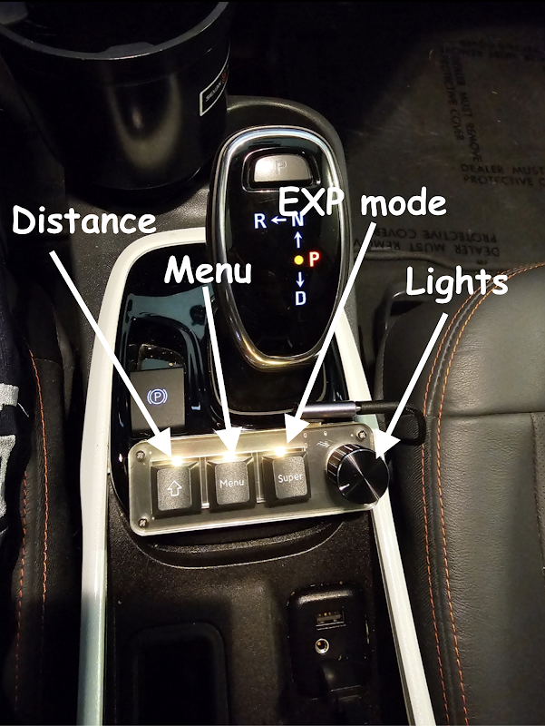

Configure Settings¶
Most settings are preselected and shouldn't need changing, but use the notes below as general guidelines. To learn more about any setting, tap the title to see a description. If behavior feels off or the car drives unexpectedly, try resetting your toggles to default. These settings will generally persist across branches and forks unless you wipe/reset.
Golden Safety Rule
If you're going to change a value, change it by no more than 10% at a time.
StarPilot Essential Settings¶
Do not skip these settings
- Turn off Human Like Following and Acceleration
- Manually set your correct vehicle fingerprint
- Radar-less cars (aka VoACC), especially Bolts without ACC: Enable CEM
Openpilot Toggles¶
This is the upstream openpilot settings window.
- Openpilot: Enabled
- Openpilot Longitudinal Control (Alpha): Enabled
- If this toggle is not present for you, ignore.
- If you want to use stock ACC, disable. You will lose all openpilot long control (eg. stop sign and traffic light stopping, Curve Speed Control, Speed Limit Control)
- Experimental Mode: Disabled
- Frogpilot/Starpilot use Conditional Experimental Mode (CEM) instead to switch into experimental when it makes sense to (eg. traffic lights).
FrogPilot Settings¶
The rest of the settings below are in the FrogPilot section of settings.
Tuning Level¶
There are multiple tuning levels in the FrogPilot settings - these will enable or disable more advanced tuning parameters.
For best results on StarPilot, you’ll need to use the Advanced tuning level.
Alerts and Sounds¶
These are optional changes. Some popular changes include:
- Alert Volume Control
- You can adjust or mute the disengage and engage sounds
- We do not recommend changing the volume of any important alerts.
- FrogPilot Alerts
- Green Light Alert
- Lead Departing Alert
Driving Controls¶
Driving Model¶
- Automatically download and update models: Turn On
Model Selection¶
Gas / Brake¶
Conditional Experimental Mode: Turn On¶
Read more about CEM in the operation guide
- Curve Detected Ahead: Turn off
- Use the Curve Speed Controller instead
- Lead Detected Ahead:
- Slower Lead: Turn On if your car has no radar (eg. Bolts)
- Stopped Lead: Turn On if your car has no radar (eg. Bolts)
- Navigation Data: Turn off
- openpilot Wants to Stop In: 8 seconds
- Helps with slowing to a stop at lights, in traffic, etc. Default is 8 seconds.
- Increase this number if your car is not slowing down in time for leads/lights.
- Decrease this number if you're getting lots of false activations and the car is entering or exiting CEM unexpectedly.
- Status Widget: Recommended: On.
- Shows an icon that displays if CEM is active, and if so, why.
Curve Speed Control: Turn On¶
Read more about CSC in the operation guide
Customize Driving Personalities¶
Enabling allows you to customize personalities to your preference.
These are tuned for StarPilot - if you wish to tune how they react, you can unlock additional settings by switching to the developer tuning level. Use caution when changing advanced parameters.
See Appearance -> Driving Screen Widgets to enable an on-screen button for switching personalities. This is helpful for cars without a following distance button.
Optional: A macropad accessory is available to adjust driving personality without touching the screen. It costs around $25 and requires minor tinkering.

Longitudinal Tuning: Turn On¶
- Acceleration Profile: Sport
- Deceleration Profile: Eco
-
Taco Bell Run: Turn Off
-
Human Like Following: Turn Off
- Human Like Acceleration: Turn Off
Quality of Life: Turn On¶
- Reverse Cruise Increase: Turn On
- Short press of CC + will increase speed by 5 mph/kph and long press will increase by 1
- Force Keep openpilot in the Standstill State:
- Enabling will require user input to resume from a fully stopped state.
- Force Stop for "Detected" Stop Lights/Signs:
- Enabling might help with Comma running stop signs and traffic lights
Traffic Light and Stop Sign Detection can be Inconsistent
You should always be extremely alert and ready to take manual control at stop lights and stop signs. Every model is different, and although red light and stopped lead detection is getting very good, stop sign detection is still quite bad. Models also tend to do rolling stops at stop signs.
- Increase Stopped Distance:
- Only applies when coming to a complete stop. If your car is regularly stopping too late when coming to a complete stop, increase this number to your preference. This will not help in cases where openpilot did not start slowing in time. See "openpilot Wants to Stop In" in the CEM settings for help with this.
- Map Accel/Decel to Gears:
- Allows sport mode to increase to the next accel profile.
Steering¶
Advanced Lateral Tuning: Turn On¶
Leave all values inside this panel at default. * Force Auto Tune Off: Turn On * Force Auto Tune On: Turn Off
Friction and actuator delay will auto-learn based on your vehicle and conditions. Auto-learn is enabled only when their default values are left unchanged. If you adjust the defaults (0.2 actuator delay and 0.05 friction for the Bolt), auto-learn turns off and it falls back to your manual selection.
Developer Sidebar
Using the developer sidebar and noticing steer ratio or lateral accel changing? That display is informational only. For GM vehicles, the only auto-learned parameters are actuator delay and friction.
Always on Lateral: Recommend Turning On¶
Read more about AoL in the operation guide
Lane Changes: Turn On¶
- Automatic Lane Changes: Turn Off.
- With this off, you have to nudge the steering wheel before it changes lanes. This is ideal, since it lets you signal to other cars that you are changing lanes without actually starting the lane change.
- Due to a quirk with steering torque, nudge-initiated lane changes will also be smoother and more natural.
Stay Aware while Changing Lanes
The Comma won't change lanes if it detects a car in your blind spot, but you should ALWAYS check first. Your blind spot monitors cannot see everything.
- One Lane Change Per Signal: Turn On just to be safe.
The remaining settings can be left at default.
Lateral Tuning: Turn On¶
Custom Torque Controller
We use a custom torque controller that generally works well with most GM vehicles. For that controller to work, BOTH Smooth Curve Handling and NNFF must be off. If either are on, it reverts to an older version of the torque controller. This might be better for certain cars with good NNFF tunes (like the Volt), but we recommend leaving both off for now.
- Force Turn Desires: Leave off
- Smooth Curve Handling: Leave off.
- Also known as NNFFLite.
- If this is on, the old torque controller will be used.
- NNFF: Neural Network Feed Forward
- Can be smoother but can also lack peak torque.
- Do not use with Bolts.
Quality of Life Improvements: Optional¶
Navigation¶
Ignore all navigation options. Recent models do not have the nav capability.
System Management¶
Optional. Provides options for adjusting the screen brightness and other device settings.
Theme and Appearance¶
Appearance¶
-
Advanced UI Controls: Optionally enable, these settings are all personal preference
-
Developer UI: Leave off
- Gives stats and things that are useful for troubleshooting & development purposes, but not useful for day-to-day driving.
-
Driving Screen Widgets: Turn On
- Driving Personality Button: Turn On for 2017-2021 Bolts, rest optional
- In StarPilot, the driving personalities mostly handle follow distance.
- 2017-21 Bolts must use the button to change personality, while most other cars can change personality using the steering wheel distance button.
- All other options are optional.
- Driving Personality Button: Turn On for 2017-2021 Bolts, rest optional
-
Navigation Widgets: Optional
-
Quality of Life: Optional
- Can adjust camera views, standby mode, and other optional settings
Theme¶
If you prefer a more professional look, you can disable all toggles here and set the startup alert to stock.
The frogpilot startup alert & various frog themed things can sometimes be concerning to passengers who have not encountered the Comma before.
Vehicle Controls¶
Vehicle Settings¶
- Select your car model
- Disable Automatic Fingerprint Detection: Enabled
- Disable openpilot Longitudinal Control: Disabled
- If this toggle is not present for you, ignore.
Fingerprinting Info
Fingerprinting is inconsistent on GM vehicles. As such, sometimes ACC bolts decide to fingerprint as Non-ACC which causes fun issues such as… not having Gas/Brake. So to be sure, it’s just always best to manually fingerprint by disabling auto fingerprint.
General Motors Settings¶
- FrogsGoMoo’s experimental longitudinal tune: Disabled
- Smooth Pedal Response on Hills: Enabled